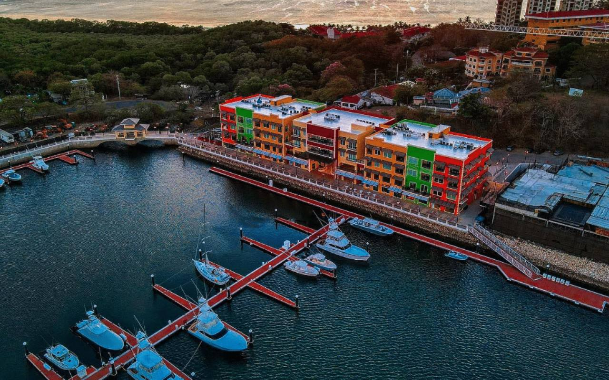

Ready to fish Guanacaste?
Seventeen boats, two bases, one honest recommendation.

The grand reopening of Flamingo Marina in 2024 marks a significant milestone for the Guanacaste region, positioning it as a premier destination for luxury boating, fishing, and eco-tourism. After years of development, Flamingo Marina now boasts world-class facilities designed to cater to both seasoned sailors and fishing enthusiasts. Set against the breathtaking backdrop of Playa Flamingo, this state-of-the-art marina offers top-tier amenities and services, transforming the area into a hub for luxury travel and adventure.
What Makes Flamingo Marina Special?
Flamingo Marina is not just about docking boats—it offers an entire experience for its visitors. Newly added features include upscale dining, shopping boutiques, and high-end services, making it a destination in itself. Yachts of all sizes can now comfortably dock at the marina, offering a luxury escape for travelers who want to explore the pristine Pacific waters of Costa Rica.
The marina’s strategic location along the northern Pacific coast makes it the perfect starting point for offshore fishing charters. Whether you’re after a thrilling day of catching marlin, sailfish, or tuna, Flamingo Marina offers access to some of the best fishing grounds in the world. For sportfishing enthusiasts, it’s the ultimate gateway to explore these deep blue waters, known for their rich marine life.
While Flamingo Marina caters to luxury, it also sets a strong example in eco-friendly practices. The marina is built with sustainability in mind, adhering to strict environmental guidelines to minimize its impact on local ecosystems. This focus on sustainability extends to the charters and tours that operate out of the marina, including whale-watching and eco-friendly diving trips. These excursions provide an incredible opportunity for visitors to connect with nature while ensuring the protection of Costa Rica's delicate marine environment.
Flamingo Marina also offers an array of other activities for those seeking adventure or relaxation. Diving and snorkeling excursions are popular choices for visitors looking to explore the vibrant underwater world of the Pacific Ocean. The nearby Catalina Islands are a short boat ride away and offer incredible diving spots where you can encounter rays, sharks, and an abundance of colorful marine life. For those who prefer staying above the water, sunset cruises departing from the marina provide an unforgettable experience of Costa Rica’s coastal beauty.
In addition, Flamingo Marina has become a hotspot for yachting events and regattas, attracting an international crowd of sailing enthusiasts. These events not only draw boating aficionados but also contribute to the lively atmosphere around the marina, creating a sense of community and excitement for both tourists and locals.
The reopening of the marina has had a positive ripple effect throughout Playa Flamingo and the surrounding areas. It has spurred growth in tourism, with new developments such as luxury resorts, boutique hotels, and gourmet restaurants emerging to cater to the influx of high-end travelers. As Flamingo Marina becomes one of the most desirable marinas in Costa Rica, it also elevates the profile of the entire Guanacaste region, drawing in visitors who seek an exclusive and premium experience.
Whether you’re planning a day of fishing, a sunset cruise, or simply a luxurious day at the marina, Flamingo Marina has something for everyone. With its mix of high-end amenities and eco-friendly practices, it offers a perfect balance of luxury and sustainability, making it a must-visit destination for travelers in 2024.
Next up: The Best Surf Spots in Tamarindo for 2024 · All posts
Seventeen boats, two bases, one honest recommendation.